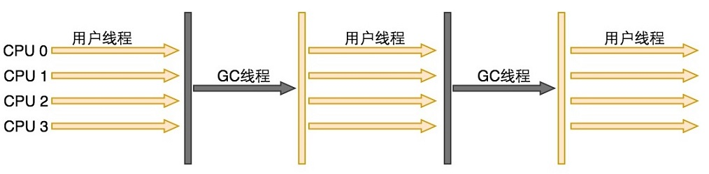

<!DOCTYPE html>
<html lang="en">
<head><meta name="generator" content="Hexo 3.8.0">
    <meta charset="utf-8">
    
    <title>
        垃圾收集器 |
        
        YingLong</title>
    
    
        <meta name="keywords" content="JVM">
    
    <meta name="viewport" content="width=device-width, initial-scale=1, maximum-scale=1">
    <meta name="description" content="垃圾收集器是内存回收的具体实现。Java虚拟机规范中对垃圾收集器应该如何实现并没有任何规定。 两者之间存在连线的收集器可以相互搭配使用，收集器所处区域表示其属于新生代收集器还是老年代收集器。  Serial收集器Serial收集器是最基本、发展历史最有悠久、基于复制算法、单线程的新生代收集器。单线程的意义并不仅仅是使用一个CPU或一条收集线程去完成垃圾收集工作，更重要的是在垃圾收集时必须暂停其他所">
<meta name="keywords" content="JVM">
<meta property="og:type" content="article">
<meta property="og:title" content="垃圾收集器">
<meta property="og:url" content="https://yaoyinglong.github.io/Blog/Java/VM/垃圾收集器/index.html">
<meta property="og:site_name" content="YingLong">
<meta property="og:description" content="垃圾收集器是内存回收的具体实现。Java虚拟机规范中对垃圾收集器应该如何实现并没有任何规定。 两者之间存在连线的收集器可以相互搭配使用，收集器所处区域表示其属于新生代收集器还是老年代收集器。  Serial收集器Serial收集器是最基本、发展历史最有悠久、基于复制算法、单线程的新生代收集器。单线程的意义并不仅仅是使用一个CPU或一条收集线程去完成垃圾收集工作，更重要的是在垃圾收集时必须暂停其他所">
<meta property="og:locale" content="en">
<meta property="og:image" content="https://yaoyinglong.github.io/images/HotSpot虚拟机垃圾收集器.png">
<meta property="og:image" content="https://yaoyinglong.github.io/images/Serial收集器运行示意图.png">
<meta property="og:image" content="https://yaoyinglong.github.io/images/ParNew收集器运行示意图.png">
<meta property="og:image" content="https://yaoyinglong.github.io/images/Parallel%20Scavenge收集器运行示意图.png">
<meta property="og:image" content="https://yaoyinglong.github.io/images/Serial%20Old收集器运行示意图.png">
<meta property="og:image" content="https://yaoyinglong.github.io/images/Parallel%20Old收集器运行示意图.png">
<meta property="og:image" content="https://yaoyinglong.github.io/images/CMS收集器运行示意图.png">
<meta property="og:image" content="https://yaoyinglong.github.io/images/G1收集器运行示意图.png">
<meta property="og:updated_time" content="2019-04-10T02:26:34.421Z">
<meta name="twitter:card" content="summary">
<meta name="twitter:title" content="垃圾收集器">
<meta name="twitter:description" content="垃圾收集器是内存回收的具体实现。Java虚拟机规范中对垃圾收集器应该如何实现并没有任何规定。 两者之间存在连线的收集器可以相互搭配使用，收集器所处区域表示其属于新生代收集器还是老年代收集器。  Serial收集器Serial收集器是最基本、发展历史最有悠久、基于复制算法、单线程的新生代收集器。单线程的意义并不仅仅是使用一个CPU或一条收集线程去完成垃圾收集工作，更重要的是在垃圾收集时必须暂停其他所">
<meta name="twitter:image" content="https://yaoyinglong.github.io/images/HotSpot虚拟机垃圾收集器.png">
    

    

    
        <link rel="icon" href="/favicon.ico">
    

    <link rel="stylesheet" href="/libs/font-awesome/css/font-awesome.min.css">
    <link rel="stylesheet" href="/libs/open-sans/styles.css">
    <link rel="stylesheet" href="/libs/source-code-pro/styles.css">

    <link rel="stylesheet" href="/css/style.css">
    <script src="/libs/jquery/2.1.3/jquery.min.js"></script>
    <script src="/libs/jquery/plugins/cookie/1.4.1/jquery.cookie.js"></script>
    
    
        <link rel="stylesheet" href="/libs/lightgallery/css/lightgallery.min.css">
    
    
        <link rel="stylesheet" href="/libs/justified-gallery/justifiedGallery.min.css">
    
    
    
    


</head>
</html>
<body>
<div id="container">
    <header id="header">
    <div id="header-main" class="header-inner">
        <div class="outer">
            <a href="/" id="logo">
                <i class="logo"></i>
                <span class="site-title">YingLong</span>
            </a>
            <nav id="main-nav">
                
                    <a class="main-nav-link" href="/">Home</a>
                
                    <a class="main-nav-link" href="/archives">Archives</a>
                
                    <a class="main-nav-link" href="/categories">Categories</a>
                
                    <a class="main-nav-link" href="/tags">Tags</a>
                
                    <a class="main-nav-link" href="/about">About</a>
                
            </nav>
            
            <div id="search-form-wrap">
    
        <form class="search-form">
            <input type="text" class="ins-search-input search-form-input" placeholder="Search">
            <button type="submit" class="search-form-submit"></button>
        </form>
        <div class="ins-search">
    <div class="ins-search-mask"></div>
    <div class="ins-search-container">
        <div class="ins-input-wrapper">
            <input type="text" class="ins-search-input" placeholder="Type something...">
            <span class="ins-close ins-selectable"><i class="fa fa-times-circle"></i></span>
        </div>
        <div class="ins-section-wrapper">
            <div class="ins-section-container"></div>
        </div>
    </div>
</div>
<script>
    (function (window) {
        var INSIGHT_CONFIG = {
            TRANSLATION: {
                POSTS: 'Posts',
                PAGES: 'Pages',
                CATEGORIES: 'Categories',
                TAGS: 'Tags',
                UNTITLED: '(Untitled)',
            },
            ROOT_URL: '/',
            CONTENT_URL: '/content.json',
        };
        window.INSIGHT_CONFIG = INSIGHT_CONFIG;
    })(window);
</script>
<script src="/js/insight.js"></script>
    
</div>
        </div>
    </div>
    <div id="main-nav-mobile" class="header-sub header-inner">
        <table class="menu outer">
            <tr>
                
                    <td><a class="main-nav-link" href="/">Home</a></td>
                
                    <td><a class="main-nav-link" href="/archives">Archives</a></td>
                
                    <td><a class="main-nav-link" href="/categories">Categories</a></td>
                
                    <td><a class="main-nav-link" href="/tags">Tags</a></td>
                
                    <td><a class="main-nav-link" href="/about">About</a></td>
                
                <td>
                    
    <div class="search-form">
        <input type="text" class="ins-search-input search-form-input" placeholder="Search">
    </div>

                </td>
            </tr>
        </table>
    </div>
</header>

    <div class="outer">
        
        
            <aside id="sidebar">
    
        
    <div class="widget-wrap" id="categories">
        <h3 class="widget-title">
            <span>categories</span>
            &nbsp;
            <a id="allExpand" href="#">
                <i class="fa fa-angle-double-down fa-2x"></i>
            </a>
        </h3>

        
        
        
            <ul class="unstyled" id="tree">
                
                    <li class="directory">
                        <a href="#" data-role="directory">
                            <i class="fa fa-folder"></i>
                            &nbsp;
                            DB
                        </a>
                        
            <ul class="unstyled" id="tree">
                
                    <li class="file"><a href="/Blog/DB/MySQL/">MySQL常用总结</a></li>
                
            </ul>
        
                    </li>
                
                    <li class="directory">
                        <a href="#" data-role="directory">
                            <i class="fa fa-folder"></i>
                            &nbsp;
                            Git
                        </a>
                        
            <ul class="unstyled" id="tree">
                
                    <li class="file"><a href="/Blog/Git/GIt基本概念/">Git基本概念</a></li>
                
                    <li class="file"><a href="/Blog/Git/GIt常用命令/">Git常用命令</a></li>
                
                    <li class="file"><a href="/Blog/Git/分支管理理解/">分支管理理解</a></li>
                
            </ul>
        
                    </li>
                
                    <li class="directory">
                        <a href="#" data-role="directory">
                            <i class="fa fa-folder"></i>
                            &nbsp;
                            Go
                        </a>
                        
            <ul class="unstyled" id="tree">
                
                    <li class="file"><a href="/Blog/Go/Go基础/">Go基础</a></li>
                
            </ul>
        
                    </li>
                
                    <li class="directory open">
                        <a href="#" data-role="directory">
                            <i class="fa fa-folder-open"></i>
                            &nbsp;
                            Java
                        </a>
                        
            <ul class="unstyled" id="tree">
                
                    <li class="directory open">
                        <a href="#" data-role="directory">
                            <i class="fa fa-folder-open"></i>
                            &nbsp;
                            VM
                        </a>
                        
            <ul class="unstyled" id="tree">
                
                    <li class="file"><a href="/Blog/Java/VM/HotSpot收集算法实现/">HotSpot收集算法实现</a></li>
                
                    <li class="file"><a href="/Blog/Java/VM/JVM内存池/">JVM内存池</a></li>
                
                    <li class="file"><a href="/Blog/Java/VM/Java内存区域/">Java内存区域</a></li>
                
                    <li class="file"><a href="/Blog/Java/VM/Minor&Major&Full GC/">Minor&Major&Full GC</a></li>
                
                    <li class="file"><a href="/Blog/Java/VM/OutOfMemoryError异常/">OOM异常实验</a></li>
                
                    <li class="file"><a href="/Blog/Java/VM/内存非配与回收策略/">内存分配与回收策略</a></li>
                
                    <li class="file"><a href="/Blog/Java/VM/垃圾收集算法/">垃圾收集算法</a></li>
                
                    <li class="file"><a href="/Blog/Java/VM/堆中对象分配&布局&访问/">堆中对象分配&布局&访问</a></li>
                
                    <li class="file"><a href="/Blog/Java/VM/对象是否存活/">对象是否存活</a></li>
                
                    <li class="file"><a href="/Blog/Java/VM/类加载的时机/">类加载的时机</a></li>
                
                    <li class="file"><a href="/Blog/Java/VM/运行时栈帧结构/">运行时栈帧结构</a></li>
                
                    <li class="file active"><a href="/Blog/Java/VM/垃圾收集器/">垃圾收集器</a></li>
                
                    <li class="file"><a href="/Blog/Java/VM/字节码指令/">字节码指令</a></li>
                
                    <li class="file"><a href="/Blog/Java/VM/方法调用/">方法调用</a></li>
                
                    <li class="file"><a href="/Blog/Java/VM/理解GC日志/">理解GC日志</a></li>
                
                    <li class="file"><a href="/Blog/Java/VM/类加载器/">类加载器</a></li>
                
                    <li class="file"><a href="/Blog/Java/VM/Class文件结构/">Class文件结构</a></li>
                
                    <li class="file"><a href="/Blog/Java/VM/属性表集合/">属性表集合</a></li>
                
                    <li class="file"><a href="/Blog/Java/VM/类加载过程/">类加载过程</a></li>
                
            </ul>
        
                    </li>
                
                    <li class="directory">
                        <a href="#" data-role="directory">
                            <i class="fa fa-folder"></i>
                            &nbsp;
                            基础
                        </a>
                        
            <ul class="unstyled" id="tree">
                
                    <li class="file"><a href="/Blog/Java/基础/lambda常用总结/">lambda常用总结</a></li>
                
                    <li class="file"><a href="/Blog/Java/基础/时间及日期总结/">Java8时间及日期</a></li>
                
            </ul>
        
                    </li>
                
                    <li class="directory">
                        <a href="#" data-role="directory">
                            <i class="fa fa-folder"></i>
                            &nbsp;
                            多线程
                        </a>
                        
            <ul class="unstyled" id="tree">
                
                    <li class="file"><a href="/Blog/Java/多线程/原子性、可见性、有序性/">原子性、可见性、有序性</a></li>
                
                    <li class="file"><a href="/Blog/Java/多线程/线程安全/">线程安全</a></li>
                
                    <li class="file"><a href="/Blog/Java/多线程/线程安全实现方式/">线程安全实现方式</a></li>
                
            </ul>
        
                    </li>
                
                    <li class="directory">
                        <a href="#" data-role="directory">
                            <i class="fa fa-folder"></i>
                            &nbsp;
                            工具
                        </a>
                        
            <ul class="unstyled" id="tree">
                
                    <li class="file"><a href="/Blog/Java/工具/Java中调用Groovy脚本/">Java中调用Groovy脚本</a></li>
                
                    <li class="file"><a href="/Blog/Java/工具/国密SM2/">国密SM2</a></li>
                
                    <li class="file"><a href="/Blog/Java/工具/国密SM4/">国密SM4</a></li>
                
            </ul>
        
                    </li>
                
            </ul>
        
                    </li>
                
                    <li class="directory">
                        <a href="#" data-role="directory">
                            <i class="fa fa-folder"></i>
                            &nbsp;
                            Linux
                        </a>
                        
            <ul class="unstyled" id="tree">
                
                    <li class="file"><a href="/Blog/Linux/Linux常用命令/">Linux常用命令</a></li>
                
                    <li class="file"><a href="/Blog/Linux/Linux常用技巧/">Linux常用技巧</a></li>
                
            </ul>
        
                    </li>
                
                    <li class="directory">
                        <a href="#" data-role="directory">
                            <i class="fa fa-folder"></i>
                            &nbsp;
                            Maven
                        </a>
                        
            <ul class="unstyled" id="tree">
                
                    <li class="file"><a href="/Blog/Maven/Maven加密JAR包/">Maven加密JAR包</a></li>
                
                    <li class="file"><a href="/Blog/Maven/Maven基础/">Maven基础</a></li>
                
                    <li class="file"><a href="/Blog/Maven/Maven属性/">Maven属性</a></li>
                
                    <li class="file"><a href="/Blog/Maven/Maven常用/">Maven常用</a></li>
                
                    <li class="file"><a href="/Blog/Maven/Maven常用工具/">Maven常用工具</a></li>
                
                    <li class="file"><a href="/Blog/Maven/Maven生命周期/">Maven生命周期</a></li>
                
                    <li class="file"><a href="/Blog/Maven/Maven插件编写/">Maven插件编写</a></li>
                
                    <li class="file"><a href="/Blog/Maven/Maven个性化打包/">Maven个性化打包</a></li>
                
                    <li class="file"><a href="/Blog/Maven/Maven仓库/">Maven仓库</a></li>
                
                    <li class="file"><a href="/Blog/Maven/Maven常用插件/">Maven常用插件</a></li>
                
                    <li class="file"><a href="/Blog/Maven/Maven插件基础/">Maven插件基础</a></li>
                
                    <li class="file"><a href="/Blog/Maven/Maven聚合与继承/">Maven聚合与继承</a></li>
                
                    <li class="file"><a href="/Blog/Maven/Maven标签全解/">Maven标签全解</a></li>
                
                    <li class="file"><a href="/Blog/Maven/Maven Assembly标签全解/">Maven Assembly标签全解</a></li>
                
            </ul>
        
                    </li>
                
                    <li class="directory">
                        <a href="#" data-role="directory">
                            <i class="fa fa-folder"></i>
                            &nbsp;
                            Python
                        </a>
                        
            <ul class="unstyled" id="tree">
                
                    <li class="file"><a href="/Blog/Python/Excel文件数据抽取/">Excel文件数据抽取</a></li>
                
            </ul>
        
                    </li>
                
                    <li class="directory">
                        <a href="#" data-role="directory">
                            <i class="fa fa-folder"></i>
                            &nbsp;
                            Test
                        </a>
                        
            <ul class="unstyled" id="tree">
                
                    <li class="file"><a href="/Blog/Test/IT测试总结/">IT测试总结</a></li>
                
                    <li class="file"><a href="/Blog/Test/JMeter日常总结/">JMeter日常总结</a></li>
                
                    <li class="file"><a href="/Blog/Test/LoadRunner日常总结/">LoadRunner日常总结</a></li>
                
                    <li class="file"><a href="/Blog/Test/UT测试总结/">UT测试总结</a></li>
                
            </ul>
        
                    </li>
                
                    <li class="directory">
                        <a href="#" data-role="directory">
                            <i class="fa fa-folder"></i>
                            &nbsp;
                            协议族
                        </a>
                        
            <ul class="unstyled" id="tree">
                
                    <li class="file"><a href="/Blog/协议族/TCPIP四层&五层模型/">TCP/IP四层&五层模型</a></li>
                
                    <li class="file"><a href="/Blog/协议族/网络基础知识/">网络基础知识</a></li>
                
                    <li class="file"><a href="/Blog/协议族/地址解析协议/">地址解析协议ARP</a></li>
                
                    <li class="file"><a href="/Blog/协议族/以太网/">以太网</a></li>
                
            </ul>
        
                    </li>
                
                    <li class="directory">
                        <a href="#" data-role="directory">
                            <i class="fa fa-folder"></i>
                            &nbsp;
                            杂记
                        </a>
                        
            <ul class="unstyled" id="tree">
                
                    <li class="file"><a href="/Blog/杂记/IDEA实用插件/">IDEA实用插件</a></li>
                
                    <li class="file"><a href="/Blog/杂记/IDEA快捷的使用/">IDEA的快捷使用</a></li>
                
                    <li class="file"><a href="/Blog/杂记/Win实用工具/">Win实用工具</a></li>
                
                    <li class="file"><a href="/Blog/杂记/JAVA实用工具/">JAVA实用工具</a></li>
                
                    <li class="file"><a href="/Blog/杂记/XSD使用总结/">XSD实用总结</a></li>
                
                    <li class="file"><a href="/Blog/杂记/SonarQube配置总结/">SonarQube配置总结</a></li>
                
            </ul>
        
                    </li>
                
                    <li class="directory">
                        <a href="#" data-role="directory">
                            <i class="fa fa-folder"></i>
                            &nbsp;
                            框架
                        </a>
                        
            <ul class="unstyled" id="tree">
                
                    <li class="directory">
                        <a href="#" data-role="directory">
                            <i class="fa fa-folder"></i>
                            &nbsp;
                            Spring
                        </a>
                        
            <ul class="unstyled" id="tree">
                
                    <li class="file"><a href="/Blog/框架/Spring/Spring Gzip压缩/">Spring Gzip压缩</a></li>
                
                    <li class="file"><a href="/Blog/框架/Spring/Spring线程池跨线程数据共享/">Spring线程池跨线程数据共享</a></li>
                
                    <li class="file"><a href="/Blog/框架/Spring/Hystrix总结/">Hystrix总结</a></li>
                
                    <li class="file"><a href="/Blog/框架/Spring/SpringMvc异步/">SpringMvc异步原理及实现</a></li>
                
            </ul>
        
                    </li>
                
                    <li class="directory">
                        <a href="#" data-role="directory">
                            <i class="fa fa-folder"></i>
                            &nbsp;
                            常见问题
                        </a>
                        
            <ul class="unstyled" id="tree">
                
                    <li class="file"><a href="/Blog/框架/常见问题/HBase依赖冲突/">HBase依赖冲突</a></li>
                
                    <li class="file"><a href="/Blog/框架/常见问题/Maven编译后文件损坏/">Maven编译后文件损坏</a></li>
                
            </ul>
        
                    </li>
                
                    <li class="file"><a href="/Blog/框架/Redis分布式锁实现/">Redis分布式锁实现</a></li>
                
                    <li class="file"><a href="/Blog/框架/Tomcat工作原理/">Tomcat工作原理</a></li>
                
            </ul>
        
                    </li>
                
                    <li class="directory">
                        <a href="#" data-role="directory">
                            <i class="fa fa-folder"></i>
                            &nbsp;
                            算法
                        </a>
                        
            <ul class="unstyled" id="tree">
                
                    <li class="directory">
                        <a href="#" data-role="directory">
                            <i class="fa fa-folder"></i>
                            &nbsp;
                            排序
                        </a>
                        
            <ul class="unstyled" id="tree">
                
                    <li class="file"><a href="/Blog/算法/排序/冒泡排序/">冒泡排序</a></li>
                
            </ul>
        
                    </li>
                
            </ul>
        
                    </li>
                
                    <li class="directory">
                        <a href="#" data-role="directory">
                            <i class="fa fa-folder"></i>
                            &nbsp;
                            设计模式
                        </a>
                        
            <ul class="unstyled" id="tree">
                
                    <li class="file"><a href="/Blog/设计模式/设计基本原则/">设计基本原则</a></li>
                
            </ul>
        
                    </li>
                
                    <li class="file"><a href="/Blog/index/">Welcome YingLong's Blog</a></li>
                
            </ul>
        
    </div>
    <script>
        $(document).ready(function () {
            var iconFolderOpenClass = 'fa-folder-open';
            var iconFolderCloseClass = 'fa-folder';
            var iconAllExpandClass = 'fa-angle-double-down';
            var iconAllPackClass = 'fa-angle-double-up';
            // Handle directory-tree expansion:
            // 左键单独展开目录
            $(document).on('click', '#categories a[data-role="directory"]', function (event) {
                event.preventDefault();

                var icon = $(this).children('.fa');
                var expanded = icon.hasClass(iconFolderOpenClass);
                var subtree = $(this).siblings('ul');
                icon.removeClass(iconFolderOpenClass).removeClass(iconFolderCloseClass);
                if (expanded) {
                    if (typeof subtree != 'undefined') {
                        subtree.slideUp({duration: 100});
                    }
                    icon.addClass(iconFolderCloseClass);
                } else {
                    if (typeof subtree != 'undefined') {
                        subtree.slideDown({duration: 100});
                    }
                    icon.addClass(iconFolderOpenClass);
                }
            });
            // 右键展开下属所有目录
            $('#categories a[data-role="directory"]').bind("contextmenu", function (event) {
                event.preventDefault();

                var icon = $(this).children('.fa');
                var expanded = icon.hasClass(iconFolderOpenClass);
                var listNode = $(this).siblings('ul');
                var subtrees = $.merge(listNode.find('li ul'), listNode);
                var icons = $.merge(listNode.find('.fa'), icon);
                icons.removeClass(iconFolderOpenClass).removeClass(iconFolderCloseClass);
                if (expanded) {
                    subtrees.slideUp({duration: 100});
                    icons.addClass(iconFolderCloseClass);
                } else {
                    subtrees.slideDown({duration: 100});
                    icons.addClass(iconFolderOpenClass);
                }
            })
            // 展开关闭所有目录按钮
            $(document).on('click', '#allExpand', function (event) {
                event.preventDefault();

                var icon = $(this).children('.fa');
                var expanded = icon.hasClass(iconAllExpandClass);
                icon.removeClass(iconAllExpandClass).removeClass(iconAllPackClass);
                if (expanded) {
                    $('#sidebar .fa.fa-folder').removeClass('fa-folder').addClass('fa-folder-open')
                    $('#categories li ul').slideDown({duration: 100});
                    icon.addClass(iconAllPackClass);
                } else {
                    $('#sidebar .fa.fa-folder-open').removeClass('fa-folder-open').addClass('fa-folder')
                    $('#categories li ul').slideUp({duration: 100});
                    icon.addClass(iconAllExpandClass);
                }
            });
        });
    </script>

    
    <div id="toTop" class="fa fa-angle-up"></div>
</aside>
        
        <section id="main"><article id="post-Java/VM/垃圾收集器" class="article article-type-post" itemscope itemprop="blogPost">
    <div class="article-inner">
        
        
            <header class="article-header">
                
                    <div class="article-meta">
                        
    <div class="article-category">
        <i class="fa fa-folder"></i>
        <a class="article-category-link" href="/categories/Java/">Java</a><i class="fa fa-angle-right"></i><a class="article-category-link" href="/categories/Java/VM/">VM</a>
    </div>

                        
    <div class="article-tag">
        <i class="fa fa-tag"></i>
        <a class="tag-link" href="/tags/JVM/">JVM</a>
    </div>

                        
    <div class="article-date">
        <i class="fa fa-calendar"></i>
        <a href="/Blog/Java/VM/垃圾收集器/">
            <time datetime="2018-01-02T16:00:00.000Z" itemprop="datePublished">2018-01-03</time>
        </a>
    </div>


                        
                    </div>
                
                
    
        <h1 class="article-title" itemprop="name">
            垃圾收集器
        </h1>
    

            </header>
        
        
        <div class="article-entry" itemprop="articleBody">
            
            
                    
            
            
                <p><strong>垃圾收集器是内存回收的具体实现</strong>。Java虚拟机规范中对垃圾收集器应该如何实现并<strong>没有任何规定</strong>。</p>
<p>两者之间<strong>存在连线</strong>的收集器可以相互<strong>搭配使用</strong>，收集器<strong>所处区域</strong>表示其属于<strong>新生代收集器</strong>还是<strong>老年代收集器</strong>。</p>
<p></p>
<h3 id="Serial收集器"><a href="#Serial收集器" class="headerlink" title="Serial收集器"></a>Serial收集器</h3><p>Serial收集器是<strong>最基本、发展历史最有悠久、基于<a href>复制算法</a>、单线程</strong>的<strong>新生代</strong>收集器。单线程的意义<strong>并不仅仅</strong>是使用<strong>一个CPU</strong>或<strong>一条收集线程</strong>去完成垃圾收集工作，更重要的是在垃圾收集时必须<strong>暂停其他所有工作线程</strong>。Serial收集器到目前为止，依然是JAVA虚拟机运行在<strong>Client模式</strong>下的<strong>默认新生代收集器</strong>。与<strong>其他收集器的单线程</strong>比Serial收集器<strong>简单高效</strong>，对于<strong>限定单个CPU</strong>的环境来说，Serial收集器由于<strong>没有线程交互</strong>开销，可以获得<strong>最高的单线程收集效率</strong>。可能会产生较长时间的停顿。使用<strong>-XX:+UseSerialGC</strong>参数指定虚拟机使用Serial收集器。</p>
<p></p>
<h3 id="ParNew收集器"><a href="#ParNew收集器" class="headerlink" title="ParNew收集器"></a>ParNew收集器</h3><p>ParNew收集器其实就是Serial收集器的<strong>多线程版本</strong>，除了<strong>使用多线程进行垃圾收集</strong>之外，其余行为包括Serial收集器可用的所有<strong>控制参数、收集算法、Stop-The-World、对象分配规整、回收策略</strong>等都与Serial收集器<strong>完全一样</strong>，两者也共用了相当多的代码。</p>
<p>ParNew收集器是许多运行在<strong>Server模式</strong>下的虚拟机中首选的<strong>新生代收集器</strong>，<strong>除了Serial收集外，目前只有ParNew收集器能与CMS收集器配合工作</strong>。但ParNew收集器在单CPU环境中绝对不会比Serial收集器效果好，甚至由于存在<strong>线程交互开销</strong>，两个CPU环境中都不能百分百保证可以超越Serial收集器。</p>
<p>ParNew收集器也是使用<strong>-XX:+UseConcMarkSweepGC选项</strong>后默认的新生代收集器，也可以使用<strong>-XX:+UseParNewGC选项</strong>来强制指定它。</p>
<p></p>
<h3 id="Parallel-Scavenge收集器"><a href="#Parallel-Scavenge收集器" class="headerlink" title="Parallel Scavenge收集器"></a>Parallel Scavenge收集器</h3><p>Parallel Scavenge是一个使用<strong><a href>复制算法</a>、并行的多线程</strong>的<strong>新生代</strong>收集器。CMS等收集器关注点是<strong>尽可能地缩短垃圾收集时用户线程的停顿时间</strong>，而Parallel Scavenge收集器的目的是<strong>达到一个可控的吞吐量</strong>。<strong>自适应调节策略</strong>是Parallel Scavenge与ParNew收集器的一个重要区别。</p>
<p>Parallel Scavenge收集器通过使用<strong>-XX:UseAdaptiveSizePolicy开关参数</strong>来设置是否使用<strong>自适应调节策略</strong>，当该参数打开时，就不需要手工通过<strong>-Xmn参数</strong>指定新生代的大小、<strong>-XX:SurvivorRatio参数</strong>指定Eden与Servivor区的比例、<strong>-XX:PretenureSizeThreshold参数</strong>直接晋升到老年代的对象大小（大于这个参数的对象将直接在老年代分配）等细节，虚拟机会根据当前系统运行情况<strong>收集性能监控信息</strong>，<strong>动态调整</strong>这些参数以提供最合适的<strong>停顿时间</strong>或<strong>最大吞吐量</strong>。只需要把基本的最大堆内存设置好，然后使用<strong>-XX:MaxGCPauseMillis参数</strong>或者<strong>-XX:GCTimeRatio参数</strong>给虚拟机<strong>设立一个优化目标</strong>，具体<strong>细节参数调节</strong>工作就由<strong>虚拟机自动完成</strong>了。</p>
<p><strong>-XX:MaxGCPauseMillis</strong>控制最大垃圾收集停顿时间。该参数允许的值是一个<strong>大于0的毫秒数</strong>，收集器将尽可能地保证内存回收花费的时间不超过设定值，但<strong>并不是把该参数设置得小就能使得系统的垃圾收集速度变快，GC停顿时间缩短是以牺牲吞吐量和新生代空间来换取的</strong>（e.g.把新生代调小，原来10秒收集一次，每次停顿100毫秒，现在5秒收集一次，每次停顿70毫秒）；</p>
<p><strong>-XX:GCTimeRatio</strong>垃圾收集时间占总时间的比率，相当于<strong>吞吐量的倒数</strong>，该参数允许的值是一个<strong>大于0且小于100的整数</strong>，<strong>默认为99</strong>允许<strong>最大1%</strong>的垃圾收集时间。</p>
<p><strong>吞吐量 = 运行用户代码时间 / （运行用户代码时间 + 垃圾收集时间）</strong>  也就是CPU用于<strong>运行用户代码</strong>的时间与<strong>CPU总消耗时间</strong>的比值。</p>
<p></p>
<h3 id="Serial-Old收集器"><a href="#Serial-Old收集器" class="headerlink" title="Serial Old收集器"></a>Serial Old收集器</h3><p>Serial Old是Serial收集器的<strong>老年代</strong>版本，它是一个使用<strong><a href>标记整理算法</a></strong>的<strong>单线程</strong>的收集器，主要也是给<strong>Client模式</strong>下的虚拟机使用。</p>
<p>如果在Service模式下，主要有<strong>两种用途</strong>：一是在JDK1.5之前版本中<strong>与Parallel Scavenge收集器搭配使用</strong>，二是<strong>作为CMS收集器的后备预案</strong>，在CMS发生<strong>Concurrent Mode Failure</strong>时使用。</p>
<p></p>
<h3 id="Parallel-Old收集器"><a href="#Parallel-Old收集器" class="headerlink" title="Parallel Old收集器"></a>Parallel Old收集器</h3><p>Parallel Old是Parallel Scavenge收集器的<strong>老年代</strong>版本，它是一个使用<strong><a href>标记整理算法</a></strong>的<strong>多线程</strong>的收集器。</p>
<p>该收集器在<strong>JDK1.6</strong>中提供，在此之前如果新生代选择了<strong>Parallel Scavenge</strong>收集器老年代只能选择<strong>Serial Old</strong>收集器。由于Serial Old收集器是<strong>单线程</strong>的即使使用了Parallel Scavenge收集器也未必能在整体应用上获得<strong>吞吐量</strong>最大化，在老年代很大且硬件条件比较高级的环境中，这种组合吞吐量甚至还不一定有<strong>ParNew加CMS</strong>的组合好。</p>
<p>在<strong>注重吞吐量</strong>以及<strong>CPU资源敏感</strong>的场合，优先考虑<strong>Parallel Scavenge加Parallel Old收集器</strong>的组合。</p>
<p></p>
<h3 id="CMS收集器"><a href="#CMS收集器" class="headerlink" title="CMS收集器"></a>CMS收集器</h3><p><strong>CMS(Concurrent Mark Sweep)收集器</strong>是一种<strong>以获取最短回收停顿时间为目标</strong>的且基于<strong><a href>标记清除算法</a></strong>的收集器。且它是HotSpot虚拟机中<strong>第一款</strong>真正意义上的<strong>并发收集器</strong>，它第一次实现了让<strong>垃圾收集线程</strong>与<strong>用户线程基本上</strong>同时工作。</p>
<p>CMS收集器运作过程相对于前面几种收集器来说<strong>更复杂</strong>一些，整个过程分为<strong>初始标记、并发标记、重新标记、并发清除</strong>4个步骤。其中<strong>初始标记、重新标记两个步骤需要Stop-The-world</strong>。<strong>初始标记</strong>仅仅只是<strong>标记一下GC Roots能直接关联</strong>到的对象，<strong>速度很快</strong>，<strong>并发标记</strong>阶段就是进行<strong>GC Roots Tracing的过程</strong>，<strong>重新标记</strong>阶段是为了<strong>修正并发标记期间因用户程序继续运作而导致标记产生变动</strong>的那一部分对象的标记记录，整个阶段停顿时间一般<strong>比初始标记稍长</strong>但<strong>比并发标记时间短</strong>。整个过<strong>程耗时最长</strong>的是<strong>并发标记</strong>和<strong>并发清理</strong>过程收集器线程都可以<strong>与用户线程一起工作</strong>，总体上CMS收集器的内存回收过程是与用户线程一起并发执行的。</p>
<p>CMS收集器<strong>对CPU资源非常敏感</strong>。在<strong>并发阶段</strong>它虽然不会导致用户线程停顿，但会<strong>占用一部分线程</strong>而导致应用程序变慢，<strong>总吞吐量降低</strong>。<strong>CMS默认启动的回收线程数</strong>是：<strong>（CPU数量 + 3）/ 4</strong>。当CPU不足4个时CMS对用户程序的影响可能变得很大。为了应付这种情况虚拟机提供了一种称为<strong>增量式并发收集器</strong>，和使用<strong>抢占式来模拟多任务</strong>机制的思想一样，在<strong>并发标记、整理</strong>时让<strong>GC线程</strong>与<strong>用户线程</strong>交替运行，尽量减少GC线程的<strong>独占</strong>资源的时间，垃圾收集过程会更长，但对用户程序影响会显得少一些，但实践证明这种方式效果一般目前已经<strong>不提倡</strong>使用。</p>
<p>CMS收集器无法处理<strong>浮动垃圾</strong>，可能出现<strong>Concurrent Mode Failure失败</strong>而导致另一次<strong><a href>Full GC</a></strong>产生。由于垃圾收集阶段用户线程还在运行，也就需要<strong>留有足够内存空间</strong>给用户线程使用，因此CMS收集器不能像其他收集器等到老年代几乎完全被填满再进行收集。当CMS运行期间预留内存无法满足程序需要，就会出现一次<strong>Concurrent Mode Failure失败</strong>，这时虚拟机就会启动<strong>后备预案</strong>，临时使用<strong>Serial Old收集器</strong>来重新进行老年代的垃圾收集，这样停顿时间就很长。可以通过<strong>参数-XX:CMSInitiatingOccupancyFraction来设置触发百分比</strong>。</p>
<p>CMS收集器是<strong>基于标<a href>记清除算法</a></strong>实现的，收集结束时<strong>会产生大量空间碎片</strong>。空间碎片过多时，在老年代还有很大空间剩余时，给大对象分配内存空间时无法找到<strong>足够大的连续的</strong>内存空间，而不得不提前触发一次<strong><a href>Full GC</a></strong>。为了解决整个问题CMS提供<strong>-XX:+UseCMSCompactAtFullCollection开关参数</strong>，<strong>默认开启</strong>，用于在Full GC时开启内存碎片的合并整理，但内存整理过程无法并发故停顿时间将变长。CMS还提供<br><strong>-XX:CMSFullGCsBeforeCompaction参数</strong>来设置<strong>执行多少次不压缩Full GC后执行一次压缩的GC</strong>，<strong>默认为0</strong>。</p>
<p></p>
<blockquote>
<p><strong>浮动垃圾</strong>是指由于CMS并发清理阶段用户线程还在运行故会产生<strong>新的垃圾</strong>，但这部分垃圾出现在<strong>标记过程之后</strong>，CMS<strong>无法在当次收集中处理</strong>掉他们，只好留待<strong>下一次GC</strong>时再清理。</p>
</blockquote>
<h3 id="G1收集器"><a href="#G1收集器" class="headerlink" title="G1收集器"></a>G1收集器</h3><p>G1时一款面向<strong>服务端</strong>应用的垃圾收集器，其他收集器收集的范围都是整个新生代或者老年代，而G1收集器将整个Java堆划分为<strong>多个大小相等的独立区域（Region）</strong>，虽然保留了<strong>老年代</strong>和<strong>新生代</strong>的概念，但老年代和新生代<strong>不再被物理隔离</strong>，它们都是<strong>一部分Region（不需要连续）的集合</strong>。</p>
<p>G1收集器会跟踪各个Region里面的垃圾堆积的<strong>价值大小</strong>，即<strong>回收所获得的空间大小以及回收所需时间经验值</strong>，在后台维护一个<strong>优先列表</strong>，每次<strong>根据允许收集的时间，优先回收价值最大的Region</strong>，这也是<strong>Garbage-First名称的由来</strong>。</p>
<p>与其他收集器相比G1收集器具备<strong>并行与并发、分代收集、空间整合、可预测停顿</strong>4个特点：</p>
<ul>
<li>G1收集器可以使用<strong>并行</strong>的方式来<strong>缩短Stop-The-World停顿时间</strong>，且可以通过<strong>并发</strong>的方式让Java程序继续执行。</li>
<li>G1收集器可以<strong>不用其他收集器的配合独立管理整个GC堆</strong>，任然<strong>保留分代的概念</strong>，采用不用的方式去处理<strong>新建的对象</strong>和已经<strong>存活了一段时间、熬过多次GC</strong>的旧对象以获得更好的收集效果。</li>
<li>G1收集器整体来看是基于<strong>标记整理</strong>算法实现的收集器，从局部（两个Region之间）来看是基于<strong>复制算法</strong>来实现的，这意味着G1运作期间<strong>不会产生内存碎片</strong>。</li>
<li>G1收集器除了追求<strong>低停顿</strong>外，还能建立<strong>可预测的停顿时间模型</strong>，能让使用者明确指定一个长度为<strong>M毫秒</strong>的时间<strong>片段</strong>内，消耗再垃圾收集上的时间<strong>不得超过N毫秒</strong>。之所以能建立可预测的停顿时间模型，是因为它可以<strong>有计划地避免在整个Java堆中进行全区域的垃圾收集</strong>。</li>
</ul>
<p>一个对象分配在某个Region中，它并<strong>非只能被本Region中的其他对象引用</strong>，而是可以与<strong>整个Java堆任意的对象</strong>发生引用关系。在G1收集器中<strong>Region之间</strong>的对象引用以及其他收集器中的<strong>新生代与老年代之间</strong>的对象引用，都是<strong>使用Rememberd Set来避免全堆扫描</strong>。<strong>每个Region都有一个与之对应的Rememberd Set</strong>，虚拟机发现程序在对<strong>Reference类型</strong>的数据进行<strong>写操作</strong>时，会产生一个<strong>Write Barrier暂时中断写操作</strong>，检查Reference引用的对象<strong>是否处于不同的Region之中</strong>，在分代中就检查<strong>是否老年代中的对象引用了新生代中的对象</strong>，如果是便<strong>通过CardTable把相关引用信息记录到被引用对象所属的Region的Rememberd Set中</strong>，当进行内存回收时，在进行<strong>GC根节点枚举范围中加入Rememberd Set</strong>即可保证不对全堆扫描也不会遗漏。</p>
<p>G1收集器的的运作大致分为<strong>初始标记、并发标记、最终标记、筛选回收</strong>4个步骤。</p>
<ul>
<li><strong>初始标记</strong>阶段<strong>仅仅标记</strong>一下<strong>GC Roots能直接关联</strong>到的对象，并且<strong>修改TAMS（Next Top at Mark Start）的值</strong>，让下一阶段用户程序并发运行时，能在<strong>正确可用</strong>的Region中创建对象，需要停顿线程，但耗时很短。</li>
<li><strong>并发标记</strong>阶段是从GC Roots开始对堆中对象进行<strong>可达性分析</strong>找出存活对象，耗时较长但<strong>可与用户程序并发执行</strong>。</li>
<li><strong>最终标记</strong>阶段是为了<strong>修正在并发标记期间因用户程序继续运作而导致标记产生变动的那一部分标记记录</strong>，虚拟机将这段时间对象变化记录在线程<strong>Rememberd Set Logs</strong>里面,最终标记阶段需要把<strong>Rememberd Set Logs的数据合并到Rememberd Set中</strong>，这个阶段需要<strong>停顿线程</strong>但<strong>可并行执行</strong>。</li>
<li><strong>筛选回收</strong>阶段首先对各个Region的<strong>回收价值和成本进行排序</strong>，根据用户所<strong>期望的GC停顿时间</strong>来制定回收计划，这个阶段也可以做到<strong>与用户程序并发执行</strong>，但因为只回收一部分Region时间是用户可控的，，而且停顿用户线程将大幅提高收集小路。</li>
</ul>
<p></p>
<h3 id="总结"><a href="#总结" class="headerlink" title="总结"></a>总结</h3><table>
<thead>
<tr>
<th style="text-align:center">收集器</th>
<th style="text-align:center">串并行/并发</th>
<th style="text-align:center">新生代/老年代</th>
<th style="text-align:center">算法</th>
<th style="text-align:center">目标</th>
<th style="text-align:center">适用场景</th>
</tr>
</thead>
<tbody>
<tr>
<td style="text-align:center"><code>Serial</code></td>
<td style="text-align:center">串行</td>
<td style="text-align:center">新生代</td>
<td style="text-align:center">复制算法</td>
<td style="text-align:center">响应速度优先</td>
<td style="text-align:center">单<code>CPU</code>环境<code>Client</code>模式</td>
</tr>
<tr>
<td style="text-align:center"><code>Serial Old</code></td>
<td style="text-align:center">串行</td>
<td style="text-align:center">老年代</td>
<td style="text-align:center">标记-整理</td>
<td style="text-align:center">响应速度优先</td>
<td style="text-align:center">单<code>CPU</code>环境<code>Client</code>模式、<code>CMS</code>后备预案</td>
</tr>
<tr>
<td style="text-align:center"><code>ParNew</code></td>
<td style="text-align:center">并行</td>
<td style="text-align:center">新生代</td>
<td style="text-align:center">复制算法</td>
<td style="text-align:center">响应速度优先</td>
<td style="text-align:center">多<code>CPU</code>环境<code>Server</code>模式与<code>CMS</code>配合</td>
</tr>
<tr>
<td style="text-align:center"><code>Parallel Scavenge</code></td>
<td style="text-align:center">并行</td>
<td style="text-align:center">新生代</td>
<td style="text-align:center">复制算法</td>
<td style="text-align:center">吞吐量优先</td>
<td style="text-align:center">在后台运算而不需要太多交互的任务</td>
</tr>
<tr>
<td style="text-align:center"><code>Parallel Old</code></td>
<td style="text-align:center">并行</td>
<td style="text-align:center">老年代</td>
<td style="text-align:center">标记-整理</td>
<td style="text-align:center">吞吐量优先</td>
<td style="text-align:center">在后台运算而不需要太多交互的任务</td>
</tr>
<tr>
<td style="text-align:center"><code>CMS</code></td>
<td style="text-align:center">并发</td>
<td style="text-align:center">老年代</td>
<td style="text-align:center">标记-清除</td>
<td style="text-align:center">响应速度优先</td>
<td style="text-align:center">互联网站或<code>B/S</code>系统服务端</td>
</tr>
<tr>
<td style="text-align:center"><code>G1</code></td>
<td style="text-align:center">并发</td>
<td style="text-align:center">新生代&amp;老年代</td>
<td style="text-align:center">标记-整理<br>复制算法</td>
<td style="text-align:center">响应速度优先</td>
<td style="text-align:center">面向服务端应用，将来替换<code>CMS</code></td>
</tr>
</tbody>
</table>

        </div>
        
    <footer class="article-footer">
    </footer>
    </div>
</article>


    
    <nav id="article-nav">
        
            <a href="/Blog/Java/VM/垃圾收集算法/" id="article-nav-newer" class="article-nav-link-wrap">
                <strong class="article-nav-caption">Newer</strong>
                <div class="article-nav-title">
                    
                        垃圾收集算法
                    
                </div>
            </a>
        
        
            <a href="/Blog/Java/VM/对象是否存活/" id="article-nav-older" class="article-nav-link-wrap">
                <strong class="article-nav-caption">Older</strong>
                <div class="article-nav-title">对象是否存活</div>
            </a>
        
    </nav>


    
    


    <!-- baidu url auto push script -->
    <script type="text/javascript">
        !function () {
            var e = /([http|https]:\/\/[a-zA-Z0-9\_\.]+\.baidu\.com)/gi, r = window.location.href,
                o = document.referrer;
            if (!e.test(r)) {
                var n = "//api.share.baidu.com/s.gif";
                o ? (n += "?r=" + encodeURIComponent(document.referrer), r && (n += "&l=" + r)) : r && (n += "?l=" + r);
                var t = new Image;
                t.src = n
            }
        }(window);
    </script>
</section>
    </div>
    <footer id="footer">
    <div class="outer">
        <div id="footer-info" class="inner">
            YaoYingLong &copy; 2020
            <!-- <a rel="license" href="http://creativecommons.org/licenses/by-nc-nd/4.0/"></a> -->
            <br> Powered by <a href="http://hexo.io/" target="_blank" rel="external nofollow noopener noreferrer">Hexo</a>. Theme - <a href="https://github.com/zthxxx/hexo-theme-Wikitten" rel="external nofollow noopener noreferrer" target="_blank">wikitten</a>
        </div>
    </div>
</footer>
    

    
        <script src="/libs/lightgallery/js/lightgallery.min.js"></script>
        <script src="/libs/lightgallery/js/lg-thumbnail.min.js"></script>
        <script src="/libs/lightgallery/js/lg-pager.min.js"></script>
        <script src="/libs/lightgallery/js/lg-autoplay.min.js"></script>
        <script src="/libs/lightgallery/js/lg-fullscreen.min.js"></script>
        <script src="/libs/lightgallery/js/lg-zoom.min.js"></script>
        <script src="/libs/lightgallery/js/lg-hash.min.js"></script>
        <script src="/libs/lightgallery/js/lg-share.min.js"></script>
        <script src="/libs/lightgallery/js/lg-video.min.js"></script>
    
    
        <script src="/libs/justified-gallery/jquery.justifiedGallery.min.js"></script>
    
    
        <script type="text/x-mathjax-config">
    MathJax.Hub.Config({
        tex2jax: {
            inlineMath: [ ["$","$"], ["\\(","\\)"] ],
            skipTags: ['script', 'noscript', 'style', 'textarea', 'pre', 'code'],
            processEscapes: true,
            TeX: {
                equationNumbers: {
                  autoNumber: 'AMS'
                }
            }
        }
    });
    MathJax.Hub.Queue(function() {
        var all = MathJax.Hub.getAllJax();
        for (var i = 0; i < all.length; ++i)
            all[i].SourceElement().parentNode.className += ' has-jax';
    });


</script>
<script async src="//cdnjs.cloudflare.com/ajax/libs/mathjax/2.7.1/MathJax.js?config=TeX-AMS-MML_HTMLorMML"></script>
    


<!-- Custom Scripts -->
<script src="/js/main.js"></script>

</div>
</body>
